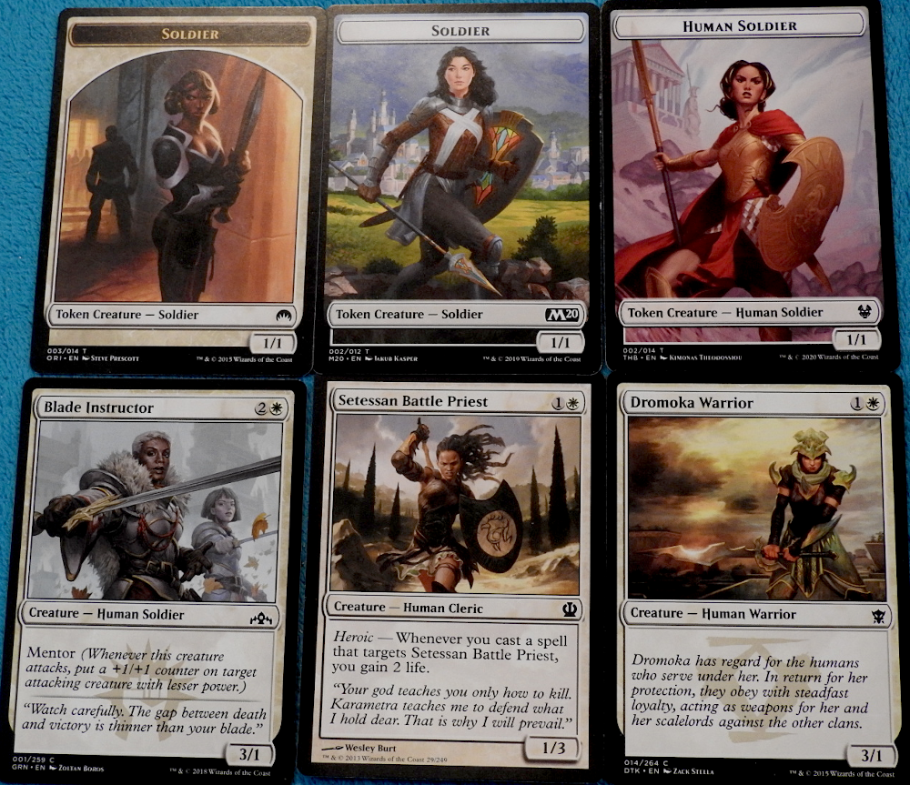
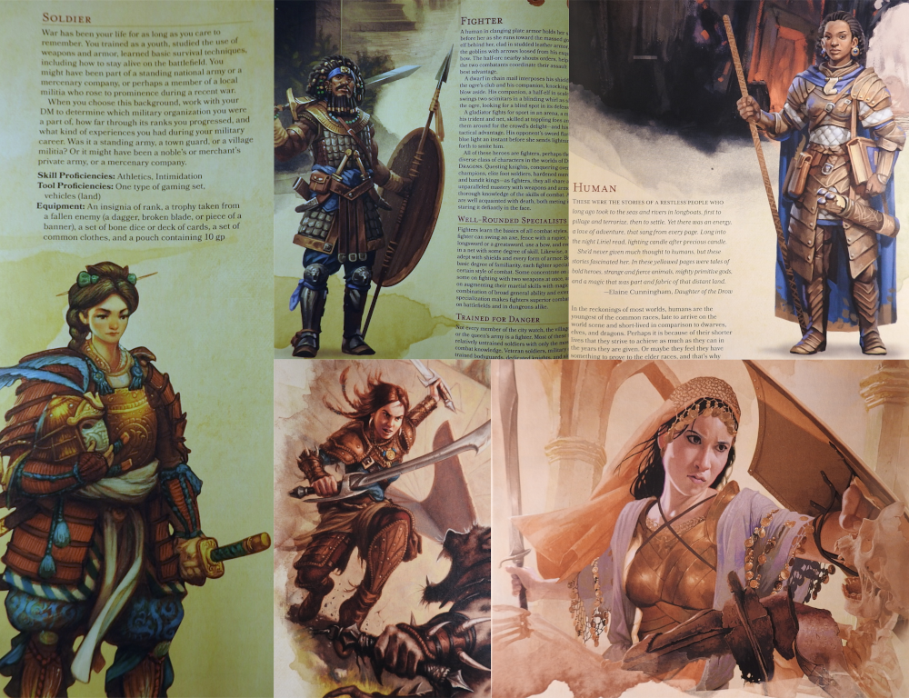
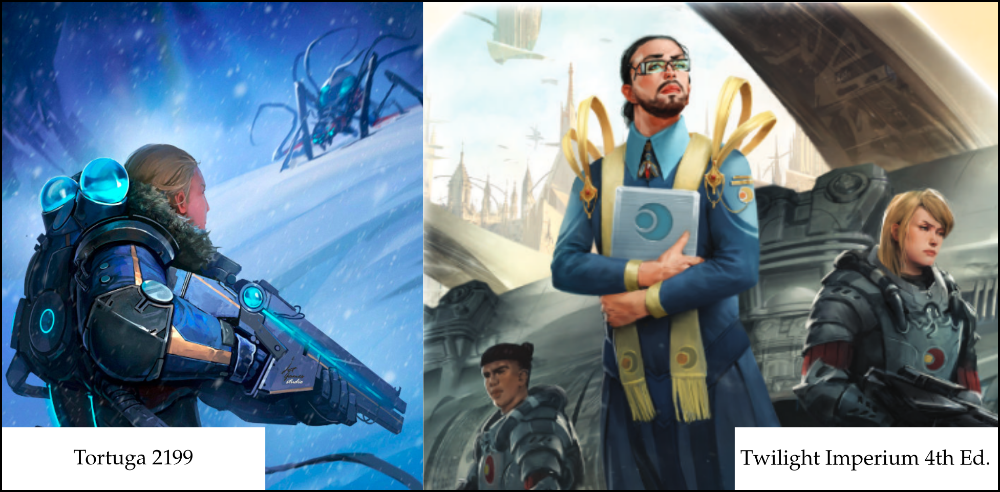
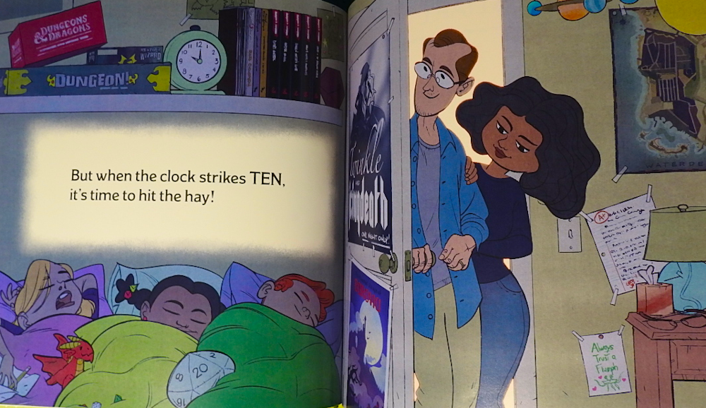

They Got to Us 2
 Generalu Stelaru
Generalu Stelaru
No, this is not a play on the title of the upcoming Naughty Dog game. But we might as well mention that they initially spent a lot of effort showcasing Ellie's non-binary sexual forays before anything else that might have been of interest to the audience. Oh, how brave! No, what grinds my gears is the 'diversification' of characters in tabletop game artwork.
We're mainly talking about the insertion of women and black people in the wrong contexts, and ostensively so, while white males are nearly always villains or otherwise scrawny and looking a bit dumb. Long gone are the days when the words warrior or knight would conjure-up an image nigh identical to what people in the thirteenth century would have seen in their daily lives. Here we are, in the current year, when historical accuracy has become irrelevant, and myths that defined culture are smudged on the altar of inclusivity so that future generations won't become Nazis or something.
Magic: The Gathering of Strong Independent Women
Have you noticed how nearly every soldier token card is now a woman? If you think that these portrayals of women are somehow empowering them, then think again. Who would care about Eowyn's feat if Gondor had an Amazonian behind every second shield? What would be so special about Joan of Arc if women had been regular draft material in the French army? This kind of normalization is only doing a disservice to actual role models. Here I'm showcasing a selection I handpicked in under a minute from a store's Magic™ box of abandoned cards.
Double-D Human Soldiers
Looking through the 5th Edition Player's Handbook, you'll have a hard time spotting a white caucasian male; dwarves and elves don't count. If I didn't know better, I'd say that the white males of the Forgotten Realms have become extinct. From fragile Asian female bodies wearing heavy armor to afro-warriors with plate-mail, D&D looks more like a high fever dream than anything else. But, I guess, we wouldn't want the boys getting strange ideas about masculinity and strength, now would we?
Love Letter: Blacked Edition & Other Anachronic Achromatisms
It is one thing to have black friends who play board games with you, but having black characters wearing medieval European attire is something else. I think it's called "Cultural Appropriation" if I'm not mistaken. In the spectrum of media, there are black WW1 soldiers, black fairy tale characters, black Centurions, and black Pharaohs. But what's generally frowned-upon is whites being inserted where they don't belong. However, it's dandy if the reverse happens over and over again because, as we all know:
Twilight Imperium and the Space Marinesses
You could pull an excuse that warrior women in a fantasy setting are just eye-candy. However, it is generally accepted that Sci-fi is an extension of our current timeline and, most importantly, reality. If technological progression is about the betterment of the human condition, why then would the 21st century find the most precious and delicate segment of the population in the front lines of an armed conflict? Aren't there enough brawny men, exoskeleton suits, and combat mechs in the far future of war? Sure, there may be theoretical contexts where these considerations are out the window, but you would see that as an exception, not the rule. If the Feminist idea of an empowered woman is having her innards rearranged in combat with an otherworldly abomination, then, I suppose, the animated tentacles genre is just fine with them.
Miscegenation Nation
Name something more subversive than slipping images of interracial relations into children's reading material. Oh, I know, there are worse examples but, so you'll take notice, they're getting into geeky children books too. I'm just wondering, is that girl in the middle adopted, or the result of random genetic selection? Are the authors of this book suggesting that mixed mariages are common, or that they wished that they were?
In all honesty, how many girls would have been bothered if the Guard card from Love Letter were, for once, a man? How do Africans stand with the media ignoring their cultural heritage and, instead, pounding the idea that they were always part of European culture? Who are we trying not to offend here?
These race/gender transitions have only begun occurring in the last decade. It is a very recent trend, concurrent with the agitation of the far-left pundits, sympathizers, and violent activists. Films, comic books, and now hobby game products are being innundated with this strange ideology. It might not seem like it, but, at this rate, future generations will no longer be able to understand History. Somebody is sowing confusion on purpose and, despite heavy criticisms from fandoms and the increasing audience lethargy, the producers and head designers can't seem to stop pedaling towards a market crash.
I hope this didn't spoil your day. Have a nice one!